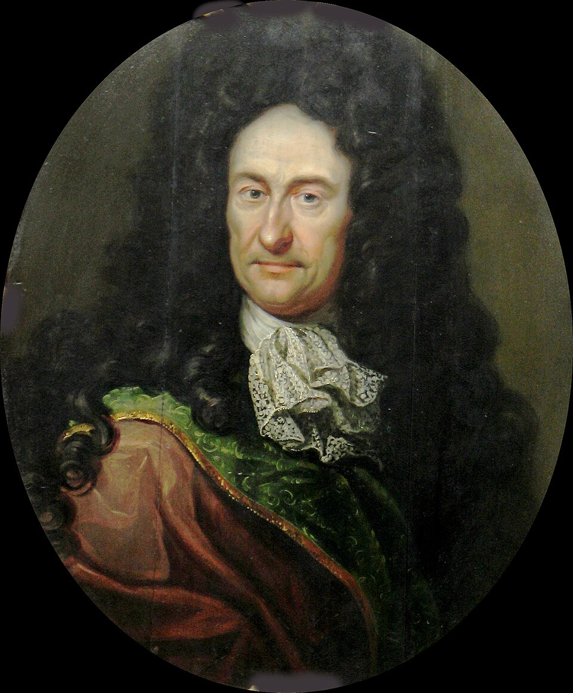
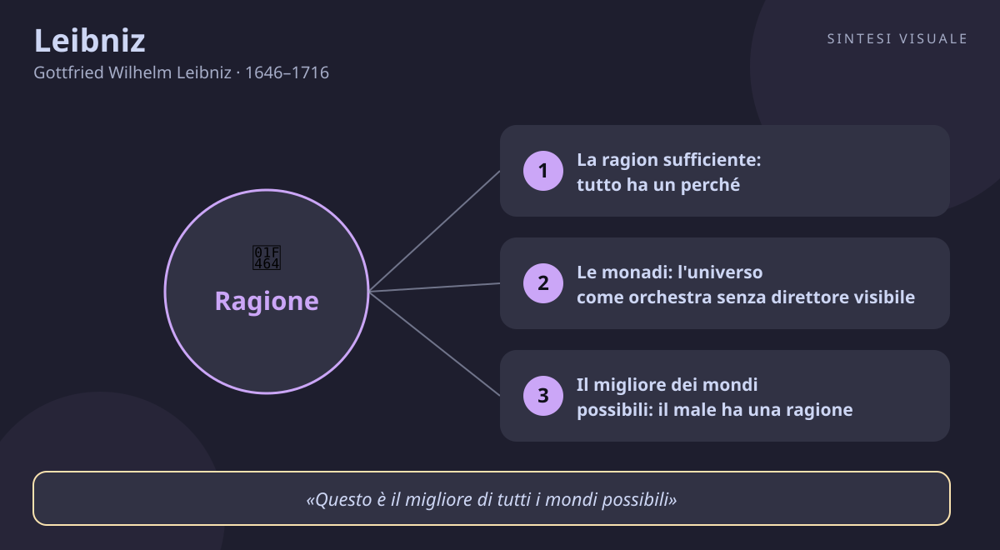

Leibniz
Gottfried Wilhelm Leibniz · 1646–1716
«Nulla accade senza una ragione sufficiente»
- Ragion sufficiente
- Monadi
- Armonia
- Mondo migliore
💬La massima
«Nessun fatto può ritenersi vero o esistente, né alcuna proposizione esser veritiera, se non vi è una ragione sufficiente per la quale essa sia così e non altrimenti.»
— Gottfried Wilhelm Leibniz, Monadologia, §§ 31-32, 1714 (in francese: «jamais rien n'arrive sans qu'il y ait une cause ou du moins une raison déterminante»)
Questa frase è il cuore del razionalismo di Leibniz: il principio di ragion sufficiente. Accanto al principio di non-contraddizione — per cui è falso ciò che si contraddice — deve esistere un secondo principio per le cose che accadono nel mondo: tutto ha un perché. Se piove, se scegli un lavoro invece di un altro, se esiste questo mondo e non un altro, c'è una ragione, anche quando non la conosciamo.
Pensate a un investigatore davanti a una finestra rotta: non si accontenta di dire «è accaduto e basta». Cerca il sasso, la traiettoria, il ragazzo che giocava. Leibniz fa lo stesso con l'intero universo: dire «è così per caso» non è una spiegazione, è una resa. La scienza moderna nasce proprio da questa fiducia: dietro ogni fenomeno c'è una ragione che si può cercare, e trovarla significa capire.
Ma Leibniz va oltre la fisica. Se tutto ha una ragione, allora anche l'esistenza del mondo intero deve averne una — e quella ragione ultima non può stare dentro il mondo, deve stare in un essere necessario che porta in sé la propria ragione: Dio. E poiché Dio agisce sempre secondo la ragione migliore, ha scelto tra infiniti mondi possibili quello con più realtà, più varietà e più ordine insieme. Da qui nasce la sua celebre idea del «migliore dei mondi possibili»: non un mondo senza mali, ma il mondo in cui ogni male ha una ragione dentro un'armonia più grande.
👤Biografia
Gottfried Wilhelm Leibniz nasce il 1º luglio 1646 a Lipsia, in Sassonia: il padre, professore di filosofia morale, muore quando lui ha sei anni e gli lascia una biblioteca immensa, che il ragazzo divora da autodidatta imparando da solo latino e greco. A quindici anni è già all'università, a venti è dottore in legge — ma la facoltà di Lipsia gli nega inspiegabilmente il titolo, così lo prende ad Altdorf e poi rifiuta la cattedra: vuole il mondo, non l'aula.
Trova il suo posto come diplomatico, giurista e bibliotecario al servizio dei principi: prima l'elettore di Magonza, poi dal 1676 i duchi di Hannover, che servirà fino alla morte. Viaggia instancabilmente: a Parigi incontra Huygens e Malebranche e scopre la matematica superiore, a Londra conosce Boyle e i membri della Royal Society, a Vienna consiglia l'imperatore, a Berlino fonda — su invito della regina Sofia Carlotta — l'Accademia delle Scienze di cui diventa primo presidente.
È un lavoratore prodigioso e un cortigiano gentile: scrive di notte, in carrozza, tra un'udienza e l'altra; intrattiene una corrispondenza di oltre quindicimila lettere con più di mille corrispondenti. Litiga amaramente con Newton sulla paternità del calcolo infinitesimale — una disputa che avvelena gli ultimi anni di entrambi — e muore il 14 novembre 1716 ad Hannover, quasi solo: alla sua sepoltura segue soltanto il segretario. Aveva dedicato la vita a unire ciò che gli altri separavano: antichi e moderni, cattolici e protestanti, filosofia e scienza.
📌Sintesi del pensiero
Per Leibniz la realtà è fatta di infinite sostanze semplici, le monadi, ciascuna diversa dalle altre e coordinata con tutte in un'armonia prestabilita da Dio. Nulla accade senza una ragione sufficiente, e tra infiniti mondi possibili Dio ha scelto il migliore: quello con il massimo di varietà, ordine e felicità. La natura procede per gradi continui senza salti, e la ragione umana — con logica, matematica e un futuro linguaggio universale — può risalire dalle verità di fatto alle loro ragioni, fino a Dio come ragione ultima.
🏛️I temi fondamentali
- La ragion sufficiente: tutto ha un perché. Per Leibniz ci sono due grandi principi del ragionare: non-contraddizione per le verità necessarie (la matematica), ragion sufficiente per le verità di fatto (il mondo). Esempio concreto: un medico davanti a una febbre inspiegabile non dice «è destino», cerca infezioni, esami, contatti — e anche se non trova subito la causa, resta certo che una ragione c'è. Quella fiducia è esattamente il principio di Leibniz applicato ogni giorno in ospedali, officine e uffici.
- Le monadi: l'universo come orchestra senza direttore visibile. Ogni monade è una sostanza semplice, senza parti né «finestre» verso l'esterno: non riceve nulla da fuori, ma rispecchia l'intero universo dal proprio punto di vista, come tante prospettive diverse della stessa città. Dio le ha sincronizzate all'origine come orologi perfetti — è l'armonia prestabilita: anima e corpo vanno d'accordo senza toccarsi davvero. Esempio concreto: due colleghi in smart working che, senza messaggiarsi, consegnano parti combacianti di un progetto perché hanno interiorizzato le stesse regole — sembrano comunicare, in realtà seguono uno spartito comune.
- Il migliore dei mondi possibili: il male ha una ragione. Dio, essendo perfettamente buono e razionale, tra infiniti mondi possibili ha scelto quello con il massimo equilibrio di varietà, semplicità delle leggi e felicità. Il male — metafisico (limite), fisico (dolore) e morale (colpa) — è il prezzo inevitabile di un mondo ricco e libero, non un errore di fabbrica. Esempio concreto: un genitore che lascia il figlio adolescente andare da solo a scuola in bicicletta accetta un piccolo rischio per un bene più grande, l'autonomia — così, dice Leibniz, Dio accetta la libertà umana con i suoi rischi per un mondo più perfetto di un paradiso di automi.
- Continuità e calcolo: la natura non fa salti. Con il motto natura non facit saltus, Leibniz sostiene che tutto procede per gradi infinitesimali: dal riposo al moto, dalla pianta all'animale, dall'inconscio alla coscienza non ci sono abissi ma sfumature. Da qui l'idea di una characteristica universalis: un linguaggio simbolico con cui «calcolare» le controversie invece di litigarci sopra — calculemus!, sediamoci e calcoliamo. Esempio concreto: un negoziante che alza i prezzi di pochi centesimi alla volta invece di raddoppiarli di colpo applica senza saperlo Leibniz — e i fogli di calcolo e il codice binario che usiamo ogni giorno discendono direttamente dal suo sogno di ridurre il ragionamento a calcolo.
📚Le opere principali
- Saggi di Teodicea (1710). L'unico libro filosofico pubblicato in vita: difende la giustizia di Dio di fronte al male e lancia la formula del «migliore dei mondi possibili». Tesi centrale: un Dio perfettamente buono e razionale non poteva che scegliere il mondo ottimale tra gli infiniti possibili, e i mali vi trovano una ragione. Conta perché fissa per due secoli il dibattito europeo su libertà, male e provvidenza — e provoca la satira di Voltaire nel Candido.
- Monadologia (1714, pubblicata postuma). Novanta paragrafi fulminei scritti in francese a Vienna come compendio del sistema: monadi, percezione, armonia prestabilita, Dio come monade suprema. Tesi centrale: la realtà è fatta di sostanze semplici gerarchicamente ordinate, dai germi alle anime razionali fino a Dio. Conta perché è il testamento filosofico più limpido di Leibniz, ancora oggi il punto di partenza per studiarlo.
- Discorso di metafisica (1686, pubblicato postumo). Trentasette articoli in cui espone per la prima volta a tutto tondo la sua filosofia: nozione completa di sostanza individuale, Dio, miracoli, libertà. Tesi centrale: ogni sostanza contiene già in sé, nella sua nozione completa, tutto ciò che le accadrà. Conta perché mostra il laboratorio di Leibniz giovane, alle prese con Cartesio e Spinoza.
- Nuovi saggi sull'intelletto umano (1704, pubblicati 1765). Replica capitolo per capitolo al Saggio di Locke: contro il foglio bianco dell'empirismo, Leibniz sostiene che l'intelletto possiede idee innate come «venature del marmo». Tesi centrale: «nulla è nell'intelletto che prima non sia stato nei sensi, eccetto l'intelletto stesso». Conta perché fonda la polemica moderna tra empirismo e razionalismo e anticipa l'idea di percezioni inconsce.
💬Massime celebri
«Nessun fatto può ritenersi vero o esistente senza una ragione sufficiente» — Monadologia (1714), §§ 31-32. Conta perché è la bussola dell'intero sistema: vieta di fermarsi al caso e fonda scienza, metafisica e teologia naturale.
«Le monadi non hanno finestre, attraverso le quali qualcosa possa entrare o uscire» — Monadologia (1714), § 7. Conta perché riassume in un'immagine indimenticabile l'indipendenza delle sostanze e il problema dell'armonia prestabilita.
«Questo è il migliore di tutti i mondi possibili» — Saggi di Teodicea (1710). Conta perché è la risposta più famosa e più discussa al problema del male: non il mondo perfetto, ma il mondo ottimale tra gli infiniti compossibili.
⌛Contesto storico
Leibniz nasce nel 1646, a due anni dalla fine della guerra dei Trent'anni: la Germania che lo accoglie è un mosaico di oltre trecento principati devastati, spopolati dalla peste e divisi tra cattolici e protestanti dopo la pace di Vestfalia del 1648. A Lipsia, città di fiere e libri, cresce tra professori luterani mentre in Inghilterra infuria la guerra civile e in Francia il piccolo Luigi XIV si avvia a diventare il Re Sole.
La sua vita adulta attraversa l'apogeo dell'assolutismo e della rivoluzione scientifica. A Parigi dal 1672 vede lo splendore di Versailles e conosce Huygens; a Londra nel 1673 ammira la Royal Society di Boyle; segue da Hannover le guerre di Luigi XIV contro l'Olanda e l'Impero, la revoca dell'Editto di Nantes nel 1685 con la fuga degli ugonotti, la Gloriosa Rivoluzione inglese del 1688 e, nel 1701, l'elevazione di Hannover a Elettorato e della Prussia a Regno. Muore nel 1716, un anno dopo Luigi XIV e mentre in Inghilterra trionfa la dinastia Hannover che lui stesso aveva contribuito a portare al trono.
I movimenti che lo formano sono la scolastica aristotelica dei padri, il meccanicismo di Cartesio, Hobbes e Gassendi, la nuova matematica di Cavalieri e Pascal, il naturalismo rinascimentale e la teologia della Riforma e Controriforma. I movimenti che trasmette sono immensi: l'illuminismo tedesco di Wolff, il criticismo di Kant che si misura con lui, l'idealismo di Hegel, la logica moderna di Frege e Russell, e — attraverso il calcolo infinitesimale e il sistema binario — l'intera informatica contemporanea.
🌊L'eredità
Difficile trovare un pensatore con eredi così diversi. Il primo a raccoglierlo è Christian Wolff, che sistematizza Leibniz in manuali letti in tutte le università tedesche: per mezzo secolo «essere filosofi» in Germania significa essere wolffiani. Poi arriva Kant, che da giovane è leibniziano e da maturo demolisce la metafisica delle monadi — ma conserva l'idea che la ragione cerchi necessariamente l'incondizionato, cioè proprio la ragion sufficiente portata al limite.
Nell'Ottocento Hegel vede in Leibniz il pensatore della concretezza individuale contro l'astrazione, mentre i logici — Boole, Frege, Russell — realizzano frammenti del suo sogno di una lingua universale del pensiero: la logica simbolica e, un secolo dopo, i linguaggi di programmazione sono figli del calculemus. Nel Novecento Gödel, Husserl e Deleuze tornano alle monadi per pensare soggetti e prospettive, e gli informatici riscoprono in Leibniz l'inventore del bit. Ancora oggi, ogni volta che diciamo «c'è una spiegazione» o «i conti devono tornare», parliamo, senza saperlo, la sua lingua.
🌍Esempi di oggi
- Il tecnico che non si arrende al «è rotto e basta». La caldaia si spegne senza motivo apparente e il cliente sbuffa, ma il tecnico controlla pressione, scheda, sonda, tiraggio finché trova il sensore incrostato: dietro il guasto c'era una ragione sufficiente, bastava cercarla con ordine.
- La collega che vede il mondo da un'altra monade. In riunione tu vedi un ritardo come pigrizia, lei lo vede come sovraccarico di un altro ufficio: stessa azienda, due prospettive che non si toccano finché non costruite un'armonia prestabilita — procedure chiare decise prima, così i due «orologi» restano sincronizzati senza litigare ogni volta.
- Lo studente davanti al voto ingiusto. Prende un brutto voto e pensa «il prof ce l'ha con me, il mondo è assurdo»; poi rilegge il compito e scopre tre errori evitabili e un paragrafo copiato male. Non è il migliore dei mondi possibili in senso ingenuo, ma nel piccolo del suo esame vale la lezione di Leibniz: cercare la ragione trasforma la lamentela in strategia per la prossima volta.
📄
# Gottfried Wilhelm Leibniz — «Nessun fatto è vero senza una ragione sufficiente»
Buongiorno! Oggi incontriamo l'uomo che voleva calcolare la verità come si calcola una somma: diplomatico di corte, bibliotecario instancabile, matematico che inventò il calcolo infinitesimale e il sistema binario, corrispondente di oltre mille pensatori in tutta Europa. Il ritratto qui sopra — Leibniz intorno al 1700, parrucca scura e sguardo vivissimo, nel dipinto della scuola di Johann Friedrich Wentzel — lo mostra negli anni della maturità ad Hannover, quando scriveva la Monadologia e sognava di riconciliare fede e ragione, scienza e metafisica.
🧠Quiz
Metti alla prova quello che hai letto — rispondi in chat con es. 1B 2A 3C 4D 5A (usa «-» per le risposte che salti):
1 Da quale opera viene la massima sulla ragione sufficiente?
2 Che cos'è una monade per Leibniz?
3 Che cosa significa «armonia prestabilita»?
4 Perché questo è, per Leibniz, «il migliore dei mondi possibili»?
5 Chi raccoglie e discute l'eredità di Leibniz nei secoli dopo?
✅Soluzioni — tocca per vedere
1B – 2B – 3B – 4C – 5C
🔁Ripasso
- Massima e monadi (domande 1-2): se hai sbagliato la 1 o la 2, ricorda i §§ 31-32 della Monadologia: ogni fatto ha una ragione sufficiente, e i mattoni del mondo sono monadi senza finestre che rispecchiano ciascuna l'universo a modo proprio.
- Armonia e mondo migliore (domande 3-4): se hai sbagliato la 3 o la 4, ricorda i due orologi sincronizzati da Dio fin dall'inizio e la scelta divina del mondo ottimale: non senza mali, ma con il miglior equilibrio possibile di varietà, ordine e bene.
- Eredità (domanda 5): se hai sbagliato la 5, ricorda la catena: Wolff lo rende manuale, Kant lo rovescia conservandolo, Hegel lo loda, e logici e informatici — da Frege a Gödel fino al bit — realizzano pezzo per pezzo il suo calculemus.
🖼️In un colpo d’occhio

Tocca l’immagine per ingrandirla.